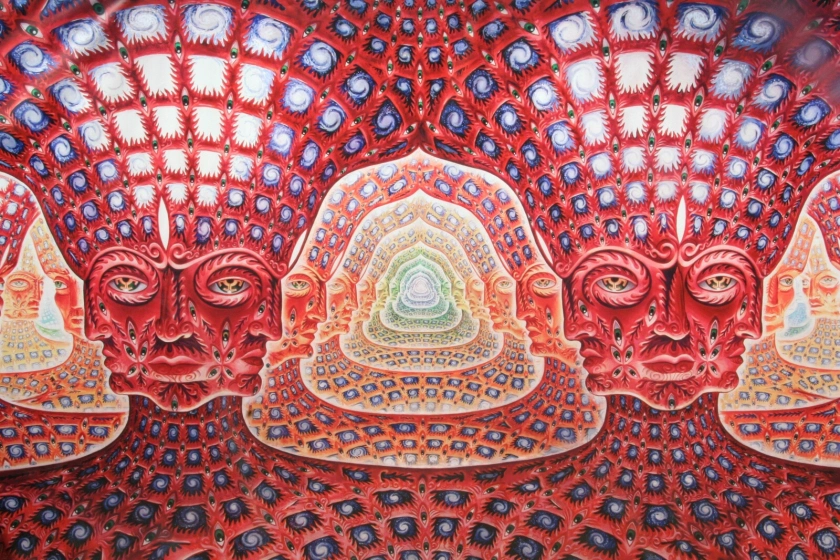

Tool is an American rock band from Los Angeles. Formed in 1990, the group's line-up includes drummer Danny Carey, guitarist Adam Jones, and vocalist Maynard James Keenan. Justin Chancellor has been the band's bassist since 1995, replacing their original bassist Paul D'Amour.
Tool has won four Grammy Awards, performed worldwide tours, and produced albums topping the charts in several countries.
A component of Tool's song repertoire relies on the use of unusual time signatures. For instance, Chancellor describes the time signature employed on the first single from Lateralus, "Schism", as "six" and "six-and-a-half" and that it later "goes into all kinds of other times". Further examples include the album's title track, which also displays shifting rhythms, as do 10,000 Days: "Wings for Marie (Pt 1)" and "10,000 Days (Wings Pt 2)".
Like their page on Facebook over here >>>>>TOOL
Vicarious, from the album "10,000 Days"